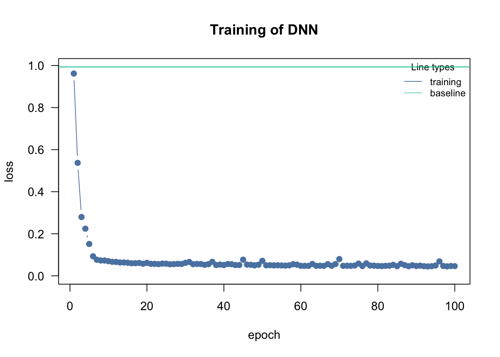

library(cito)
df = iris
df[,1:4] = scale(df[,1:4])
autoencoder = dnn(cbind(Sepal.Length, Sepal.Width, Petal.Length, Petal.Width) ~ Sepal.Length+Sepal.Width+Petal.Length+Petal.Width, hidden = c(10L, 5L, 2L, 5L, 10L), data = df, lr = 0.1, verbose = FALSE)Registered S3 methods overwritten by 'reformulas':
method from
head.call cito
head.formula cito
head.name cito
autoencoder$netAn `nn_module` containing 236 parameters.
── Modules ─────────────────────────────────────────────────────────────────────
• 0: <nn_linear> #50 parameters
• 1: <nn_selu> #0 parameters
• 2: <nn_linear> #55 parameters
• 3: <nn_selu> #0 parameters
• 4: <nn_linear> #12 parameters
• 5: <nn_selu> #0 parameters
• 6: <nn_linear> #15 parameters
• 7: <nn_selu> #0 parameters
• 8: <nn_linear> #60 parameters
• 9: <nn_selu> #0 parameters
• 10: <nn_linear> #44 parameterspredictions =
as.matrix(df[,1:4]) %>%
torch_tensor() %>%
autoencoder$net$`0`() %>%
autoencoder$net$`1`() %>%
autoencoder$net$`2`() %>%
autoencoder$net$`3`() %>%
autoencoder$net$`4`() %>%
as.matrix()
plot(predictions, col = iris$Species)